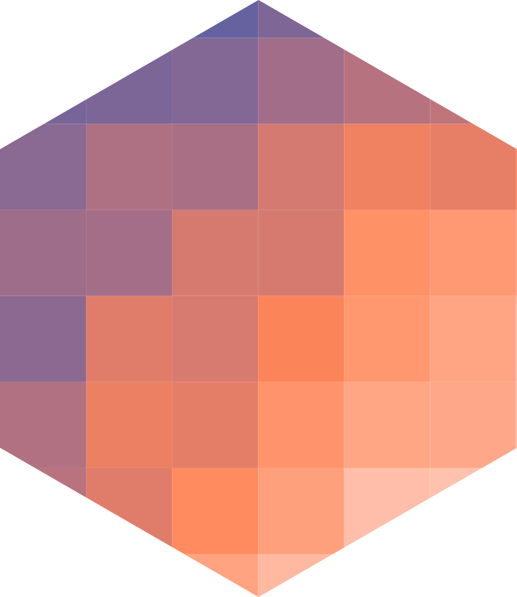

LogoClim User Manual
Welcome

Welcome
LogoClim is a NetLogo model designed to simulate and visualize global climate conditions. It allows researchers to pull high-resolution climate data directly into agent-based models, making it easier to study how climate variables interact with complex systems over time.
This manual walks you through everything you need to get started: an overview of the model’s structure, a breakdown of its core components, step-by-step usage instructions, and practical examples showing how to configure and run simulations. Whether you’re new to NetLogo or already familiar with agent-based modeling, the goal here is to give you a clear path from setup to results.
If something is still unclear after reading through, feel free to open a discussion in the project’s discussion tab on GitHub. The community is there to help, though response times may vary.
{kind=link}
LogoClim’s interface. Click on the image to enlarge it.
Contributing

Contributions are always welcome, whether that’s reporting bugs, suggesting features, or improving the code or docs.
Before opening a new issue, please check the model’s issues tab to see if your topic has already been reported.
You can also support the development of LogoClim by becoming a sponsor. Click here to make a donation. Please mention LogoClim in your donation message.
Citation
When using WorldClim data, you must also cite the original data sources.
The appropriate citation depends on the specific dataset utilized. Please refer to the WorldClim website for up-to-date citation guidelines and dataset references.
If you use this model in your research, please cite it to acknowledge the effort invested in its development and maintenance. Your citation helps support the ongoing improvement of the model.
To cite LogoClim in publications please use the following format:
Vartanian, D., Garcia, L., & Carvalho, A. M. (2026). LogoClim: WorldClim in NetLogo [Computer software]. GitHub. https://github.com/danielvartan/logoclim
A BibLaTeX entry for LaTeX users is:
@software{vartanian2026,
title = {LogoClim: WorldClim in NetLogo},
author = {{Daniel Vartanian} and {Leandro Garcia} and {Aline Martins de Carvalho}},
year = {2026},
publisher = {GitHub},
url = {https://github.com/danielvartan/logoclim}
}License

This manual is licensed under the Creative Commons Attribution-NonCommercial-ShareAlike 4.0 International License. You can share and adapt the material for non-commercial purposes, as long as you provide appropriate credit, use the same license, and indicate if changes were made.
Acknowledgments
We gratefully acknowledge Robert J. Hijmans, Stephen E. Fick, and the entire WorldClim team for their outstanding work in creating and maintaining the WorldClim datasets.
We thank the Climatic Research Unit at the University of East Anglia and the United Kingdom’s Met Office for developing and providing access to the CRU-TS-4.09 dataset, a vital source of historical climate data.
We also acknowledge the World Climate Research Programme (WCRP), its Working Group on Coupled Modelling, and the Coupled Model Intercomparison Project Phase 6 (CMIP6) for coordinating and advancing global climate model development.
We are grateful to the climate modeling groups for producing and sharing their model outputs, the Earth System Grid Federation (ESGF) for archiving and providing access to the data, and the many funding agencies that support CMIP6 and ESGF.

This work was supported by the Sustentarea Research and Extension Center at the University of São Paulo (USP).

This work was supported by the Resiclima Network, an international collaboration for the multidimensional and interdisciplinary study of global climate change.

This work was supported by the National Council for Scientific and Technological Development (CNPq) of the Ministry of Science, Technology and Innovation (MCTI) of Brazil and by the Department of Science and Technology (DECIT) of the Secretariat of Science, Technology, Innovation and Strategic Health Inputs (SECTICS) of the Ministry of Health (MS) of Brazil, through Call CNPq/DECIT/SECTICS/MS No. 18/2023 (No. 444588/2023-0).